בקעים של דופן הבטן
מפשעתי, פמורלי, בטני וחתכי: אנטומיה, אבחנה, החלטה על ניתוח ומצבי חירום
בסוף המפגש תדעו
- לתאר את התעלה המפשעתית ואת המשולש של הסלבך. להבדיל בין בקע ישיר, עקיף ופמורלי
- לבצע בדיקה גופנית של המפשעה ושל דופן הבטן ולדעת מתי צריך הדמיה
- להחליט מתי לנתח ומתי אפשר להמתין
- להכיר את סוגי התיקון העיקריים: ברקמה, ברשת פתוח וזעיר-פולשני
- לזהות בקע כלוא או חנוק ולדעת מה עושים בחדר המיון
מה זה בקע?
- בקע: פגם בדופן הבטן שדרכו בולטים תוכן פרה-פריטונאלי או תוך-בטני. המטופל רואה בליטה
- שק הבקע: הצפק שעוטף את התוכן הבולט
- בקע ספונטני: טבורי, אפיגסטרי. נרכש: בעיקר בקע בחתך ניתוחי (incisional)
- בקע מחליק (sliding): חלק מדופן השק הוא איבר רטרופריטונאלי, בדרך כלל מעי גס או שלפוחית
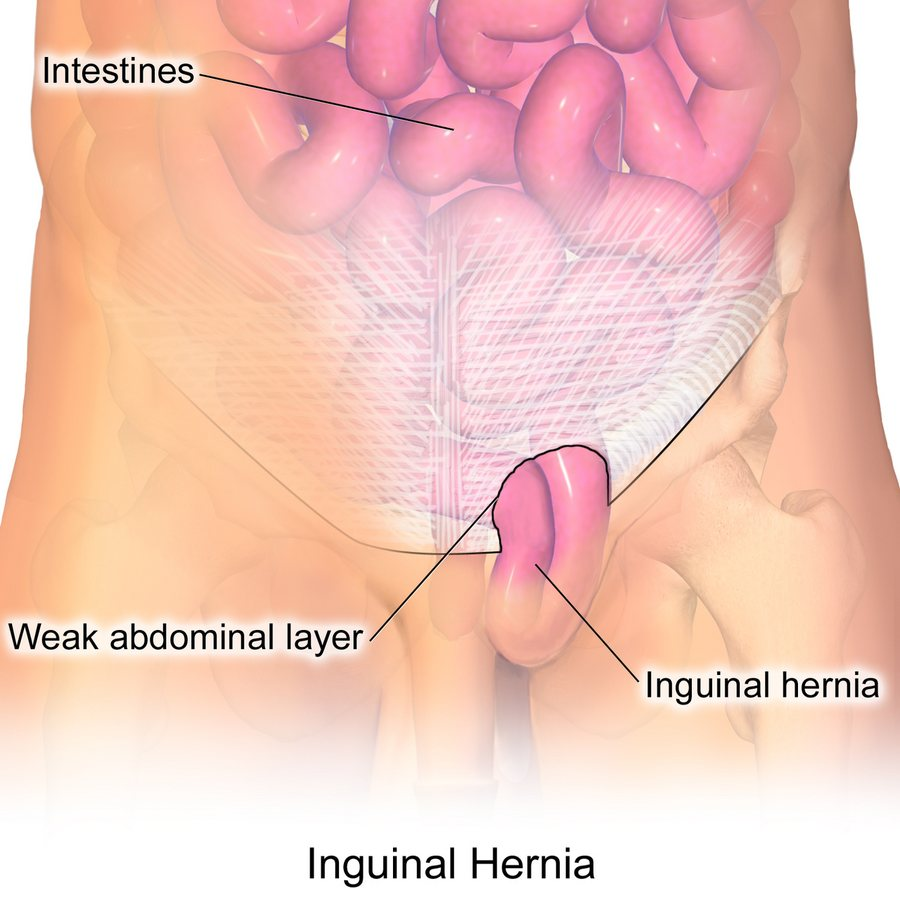
בקעים במספרים
- בקע פמורלי: כ-3% מבקעי המפשעה, נשים פי 10 מגברים. ובכל זאת, גם בנשים הבקע השכיח ביותר הוא מפשעתי
- בקע עקיף הוא השכיח ביותר בשני המינים
- בקע עקיף ופמורלי שכיחים יותר בצד ימין (ירידה איטית יותר של האשך הימני. משמאל הסיגמואיד חוסם את התעלה הפמורלית)
- בקע בחתך: רוב הסיכון ב-5 השנים הראשונות אחרי הניתוח
התעלה המפשעתית
מה עובר בתעלה
- בגבר: חבל הזרע: שריר הקרמסטר, צינור הזרע, כלי הדם של האשך, הענף הגניטלי של העצב הגניטופמורלי, לימפה ושארית ה-processus vaginalis
- באישה: הרצועה העגולה
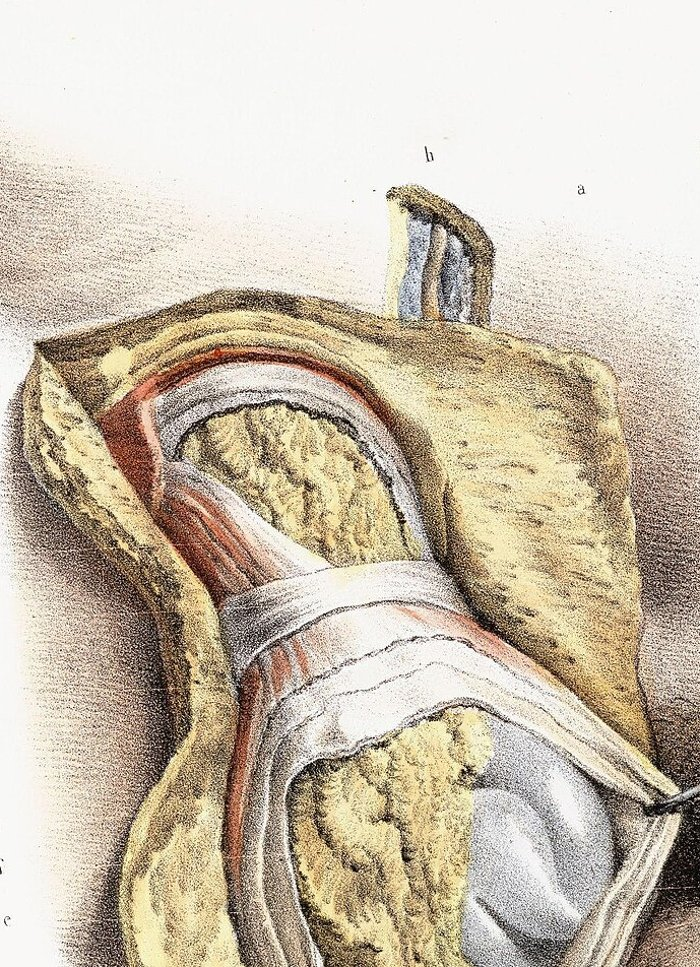
המשולש של הסלבך
- גבולות: כלי הדם האפיגסטריים התחתונים (לטרלית), שולי שריר הישר (מדיאלית), הרצועה המפשעתית (למטה)
- בקע ישיר: דרך רצפת התעלה בתוך המשולש, מדיאלית לכלים האפיגסטריים. הסיבה: חולשה של הפציה הטרנסברסלית
- בקע עקיף: דרך הטבעת הפנימית, לטרלית לכלים האפיגסטריים, לאורך חבל הזרע
- בקע פמורלי: מתחת לרצועה המפשעתית, מדיאלית לווריד הפמורלי
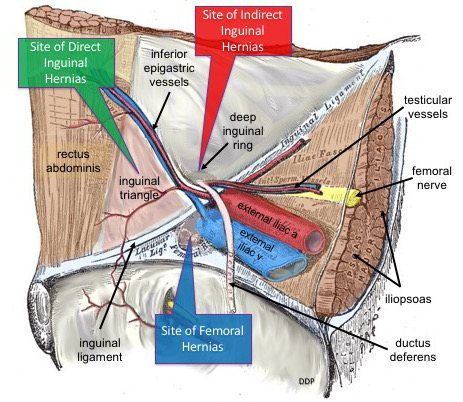
חמשת המשולשים של המפשעה
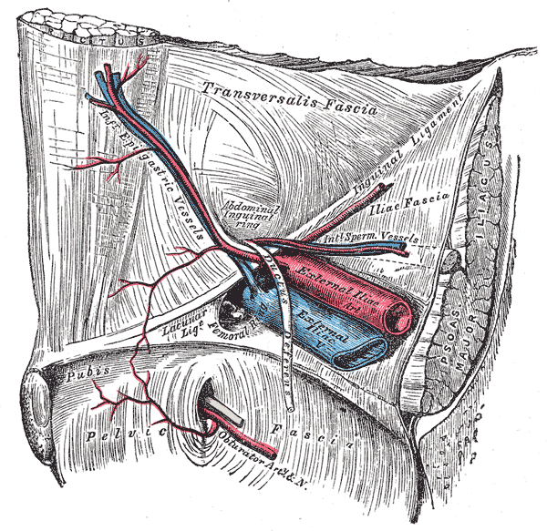
👆 לחצו על משולש בציור כדי לקרוא עליו
מדיאלית לכלים האפיגסטריים התחתונים. הבקע יוצא דרך רצפה חלשה של התעלה (הפציה הטרנסברסלית). בניתוח מנקים את השומן מהמשולש כדי לא לפספס פגם קטן.
לטרלית לכלים האפיגסטריים. השק יוצא לאורך חבל הזרע. בניתוח מפרידים את השק מצינור הזרע ומכלי האשך (פריאטליזציה) עד שהם שוכבים שטוחים.
מתחת לטרקטוס האיליופובי, מדיאלית לווריד האיליאקי החיצוני. חובה לבדוק את האזור הזה בכל תיקון: מנתחים בין הווריד לרצועת קופר ושוללים בקע פמורלי.
בין צינור הזרע (מדיאלית) לכלי האשך (לטרלית). הקודקוד בטבעת הפנימית. מתחתיו העורק והווריד האיליאקיים החיצוניים. אין כאן קיבוע של רשת ואין ניתוח עיוור: פגיעה כאן היא דימום מסכן חיים.
לטרלית לכלי האשך ומתחת לטרקטוס האיליופובי. כאן עוברים העצב העורי הלטרלי של הירך והענפים של העצב הגניטופמורלי. לא מקבעים ולא מנתחים באגרסיביות: פגיעה גורמת לכאב כרוני.
המפשעה בלפרוסקופיה
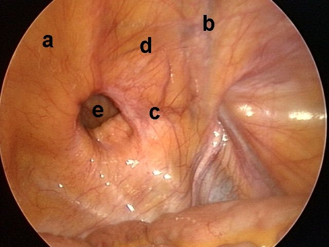
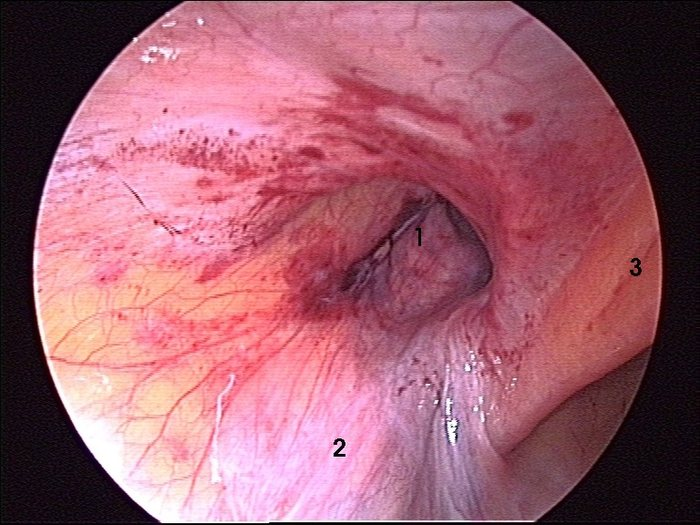
קטן, שקט ומסוכן
- יוצא דרך התעלה הפמורלית: מתחת לרצועה המפשעתית, מדיאלית לווריד הפמורלי
- יחס נשים לגברים 10:1. לעיתים קרובות מתפספס
- סיכון גבוה יותר לחניקה מבקע מפשעתי. לכן לא ממתינים: מתקנים בזמן סביר
- ההמלצות מעדיפות גישה זעיר-פולשנית בבקע פמורלי ובנשים
- בבקע פמורלי חנוק בלי אפשרות לרשת: תיקון McVay לרצועת קופר סוגר את התעלה הפמורלית
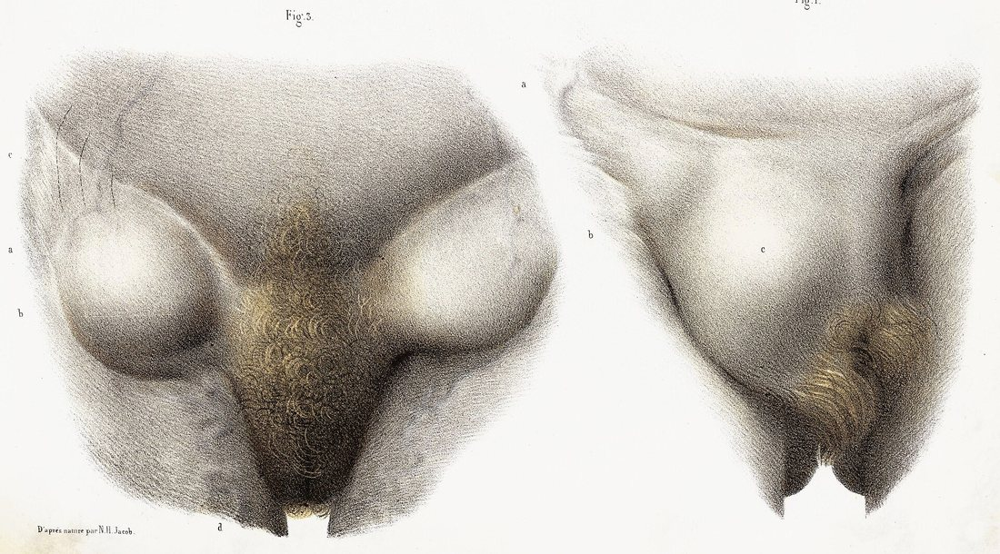
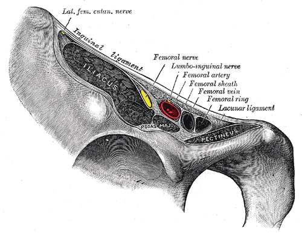
הבדיקה היא האבחנה
איך בודקים את המפשעה
- בעמידה: מסתכלים על שתי המפשעות ומשווים. בליטה מעל הרצועה המפשעתית או מתחתיה
- Valsalva או שיעול: הבליטה גדלה או מופיעה
- מישוש הטבעת החיצונית: אצבע מכניסים דרך עור שק האשכים לאורך חבל הזרע. מבקשים מהמטופל להשתעל
- בשכיבה: האם הבקע חוזר לבטן לבד או בלחיצה עדינה. בודקים גם את הצד השני
- בליטה מתחת לרצועה (במיוחד באישה): לחשוב על בקע פמורלי
אנמנזה
- תסמינים והשפעה על איכות החיים. ניתוחים קודמים ודוחות ניתוח
- לחץ תוך-בטני כרוני: שיעול, מיימת, ערמונית, עצירות
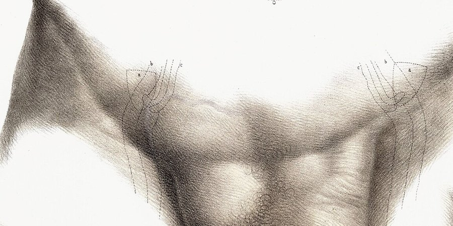

לנתח או להמתין?
- בקע מפשעתי עם תסמינים: ניתוח. בקעים נוטים להתקדם עם הזמן
- גבר בלי תסמינים או עם תסמינים קלים: המתנה ערנית היא אפשרות בטוחה
- לא חל על נשים (לא נכללו במחקר) ולא על בקע פמורלי
- חגורת בקע יכולה להקל על חלק מהממתינים
יותר מ-700 גברים עם בקע מפשעתי עם תסמינים קלים או בלי תסמינים
• כליאה בזרוע ההמתנה: 0.3% בשנתיים, בלי מקרי מוות
• כרבע עברו לניתוח בגלל כאב. אחרי 10 שנים: 68%. בני 65 ומעלה: כמעט 80%
• מי שנותח מאוחר יותר לא סבל מיותר זיהומים או חזרות
כפי שמסוכם ב-Sabiston 22, פרק 82 עמ׳ 1097תיקון פתוח: רשת או רקמה
- חתך מעל הרצועה המפשעתית, פתיחת האפונורוזה של האלכסוני החיצוני דרך הטבעת החיצונית
- זיהוי ושמירה של שלושה עצבים: האיליואינגווינלי, האיליוהיפוגסטרי והענף הגניטלי
- שחרור חבל הזרע, הפרדת השק העקיף והחזרתו (או קשירה). בקע ישיר: החזרה מתחת לפציה הטרנסברסלית
- רשת שטוחה, לפחות 2 ס״מ מעבר לפקעת הפוביס, בלי תפר לפקעת עצמה
- השוליים התחתונים לרצועה המפשעתית, העליונים לגיד המשותף. הזנבות סביב חבל הזרע יוצרים טבעת פנימית חדשה
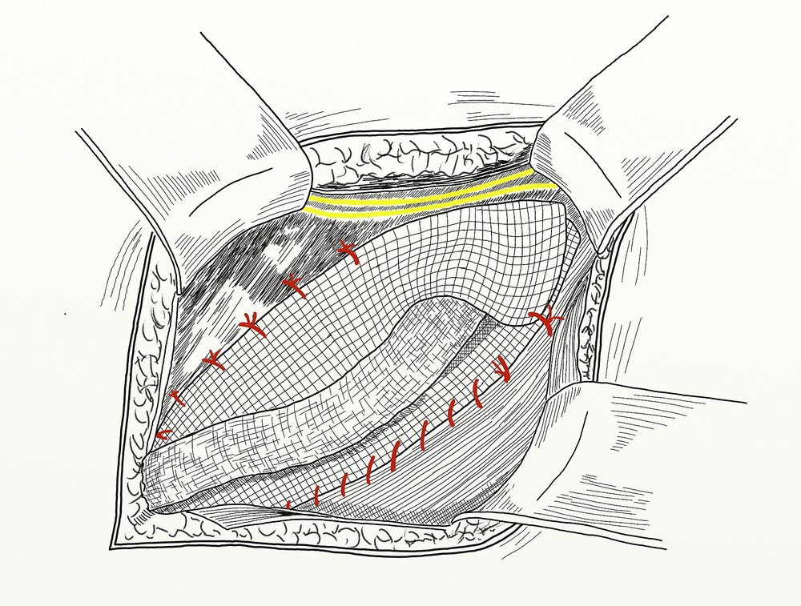
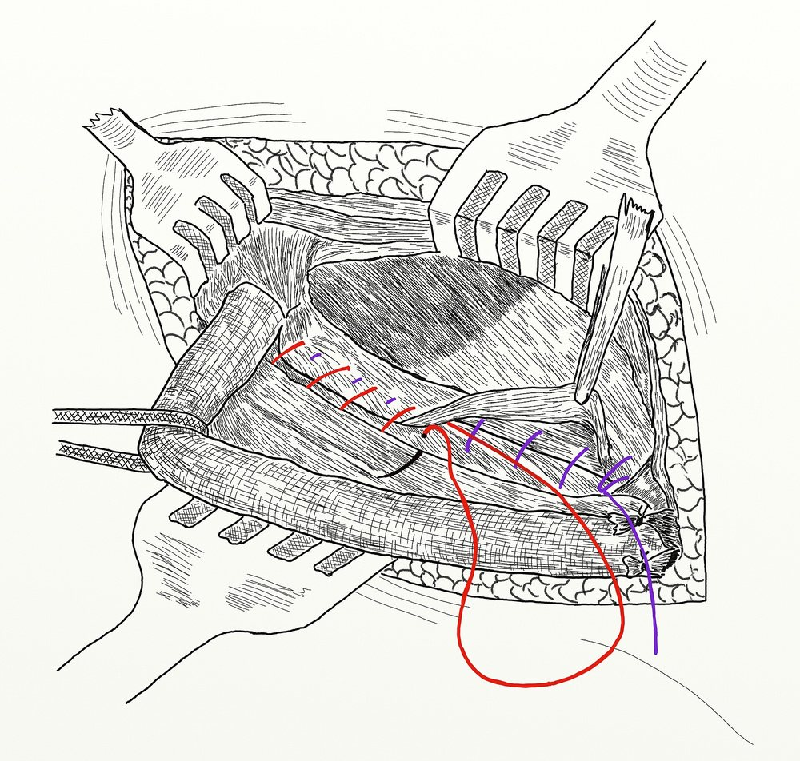
שלוש דרכים להגיע לאותו מקום: TAPP, TEP, eTEP
בשלושתן הרשת יושבת באותו מקום: בחלל הפרה-פריטונאלי, מאחורי הפתח המיופקטינאלי. ההבדל הוא איך נכנסים. אפשר בלפרוסקופיה או ברובוט
| TAPPדרך חלל הבטן | TEPמחוץ לצפק | eTEPמחוץ לצפק, מבט מורחב | |
|---|---|---|---|
| כניסה | טרוקר מצלמה בקו האמצע, לפחות 15 ס״מ מהפוביס. עוד שני טרוקרים לצדדים. נכנסים לחלל הבטן | חתך של 1–2 ס״מ מתחת לטבור, פתיחת הנדן הקדמי, הזזת שריר הישר ופיתוח החלל מאחוריו עד הפוביס, למשל בבלון | כמו TEP, עם חיתוך של הקו הקשתי (arcuate line) כדי להגדיל את החלל |
| הדרך לרשת | פתיחת דש צפק 4–6 ס״מ מעל הפגם ועד עמוד הכסל. בסוף: סגירת הדש מעל הרשת | Hasson ועוד שני טרוקרים של 5 מ״מ בקו האמצע. לא נכנסים לצפק בכלל | מיקום טרוקרים גמיש, נוח יותר למנתח (2009) |
| יתרון | הכי נפוצה. רואים את שני הצדדים ואת תוכן הבטן | בלי כניסה לחלל הבטן (McKernan, 1993) | יותר מקום ויותר ארגונומי מ-TEP |
| מה לזכור | חובה לסגור את הצפק: מונע הדבקויות ותזוזה של הרשת | קרע בצפק מוציא את ה-CO₂ ומקטין את החלל. לפעמים עוברים ל-TAPP. קרע גדול שלא זוהה: סיכון לבקע בין שכבות הדופן | אותם עקרונות כמו TEP |
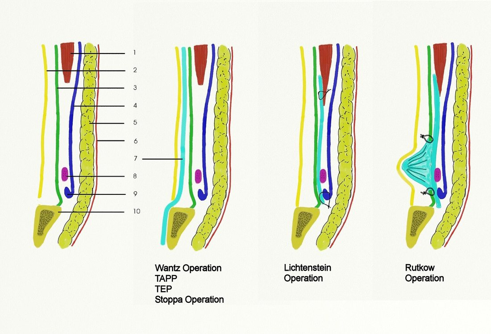

"המבט הקריטי" של הפתח המיופקטינאלי
- פקעת הפוביס מזוהה ומנותחת מעבר לקו האמצע. רצועת קופר מזוהה
- המרחב הישיר נקי משומן: רואים את המשולש של הסלבך
- בחלל Retzius: לפחות 2 ס״מ בין רצועת קופר לשלפוחית, כדי שהרשת לא תתקפל
- בין הווריד האיליאקי לרצועת קופר: שוללים בקע פמורלי
- פריאטליזציה: השק והצפק מופרדים מצינור הזרע ומכלי האשך עד שהם שוכבים שטוחים
- ליפומה של חבל הזרע מזוהה ומוחזרת
- הדיסקציה ממשיכה לטרלית מעבר לעמוד הכסל הקדמי-עליון
- רשת של 10×15 ס״מ לפחות, שטוחה, בלי חתך לחבל הזרע. קיבוע רק מעל הקו בין עמוד הכסל לטבעת הפנימית. ריקון הגז תחת ראייה
מה מתאים למי
בקעים בטניים וחתכיים
- ספונטניים: טבורי, אפיגסטרי. נרכשים: בחתך ניתוחי, אחרי חבלה
- סיווג מקובל: האגודה האירופית לבקע. קו האמצע M1–M5, צדדי L1–L4
- בקע טבורי: מתחת ל-4 ס״מ, רשת הורידה חזרות (4% לעומת 12%). בפגם קטן התועלת קטנה יותר
- בקע מורכב או לא שגרתי: CT
בקע כלוא וחנוק
הסיפור
- כאב חד בבקע שלא חוזר
- סימני חסימה: בחילות והקאות
- שינויי צבע בעור מעל הבקע, חום
- האבחנה קלינית. ספירה, לקטט ו-CT עוזרים, אבל לא חייבים לחכות להם
במיון
- החייאת נוזלים
- אנטיביוטיקה רחבת טווח
- הזמנה לחדר ניתוח: לשחרר את החסימה ולכרות מעי נמק
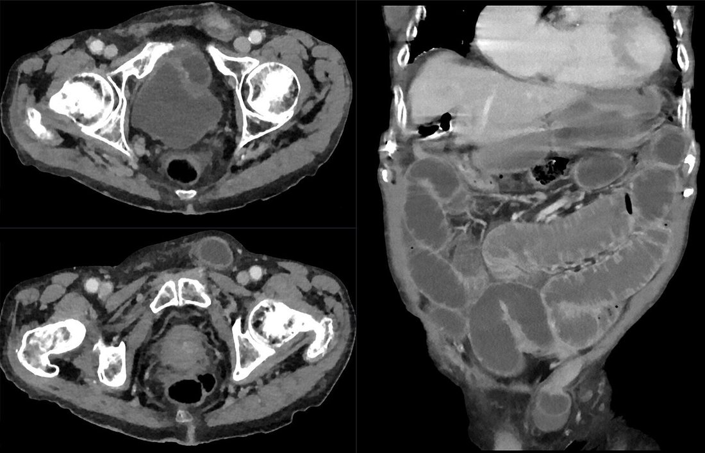
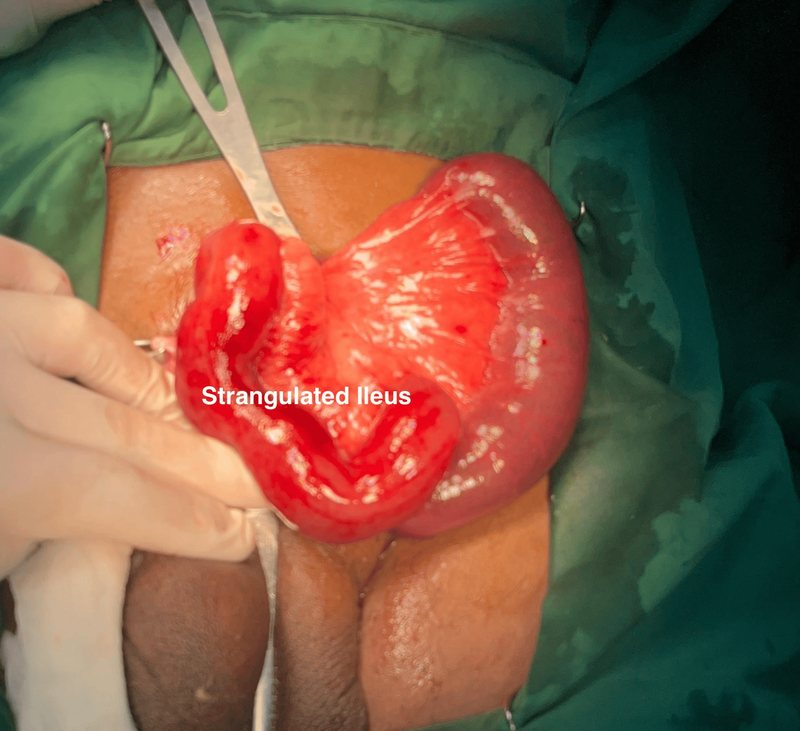
סיבוכים שצריך להכיר
- סרומה והמטומה: רוב המקרים חולפים בהשגחה. המטומה גדולה מפנים. דימום פעיל חוזר לחדר ניתוח
- אצירת שתן: שכיחה אחרי ניתוח בקע, במיוחד בגברים מבוגרים
- כאב חדש וחזק מיד אחרי הניתוח: חשד ללכידת עצב. חוקרים מוקדם
- אנטיביוטיקה מונעת: בתיקון פתוח מתוכנן בסביבה בסיכון נמוך לא הוכחה תועלת. נותנים בסיכון גבוה
- זיהום רשת: כמעט תמיד מצריך הוצאה שלמה של הרשת
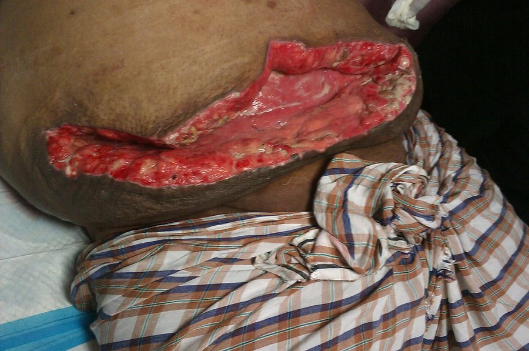
מחקרים שכדאי להכיר
39 קביעות ו-32 המלצות. רשת לרוב המטופלים. בלי רשת: Shouldice. בבקע ראשוני חד-צדדי (בכל המינים) מומלצת גישה זעיר-פולשנית, אם יש מומחיות ומשאבים
Stabilini C et al. BJS Open 2023;7(5):zrad080שני מחקרים אקראיים בבקע מפשעתי. לא נמצא יתרון קליני לרובוט בכאב, בסיבוכים או באיכות החיים. הניתוח הרובוטי ארך יותר. ב-RIVAL הוא גם עלה יותר
Prabhu AS et al. JAMA Surg 2020;155:380-7 · Angehrn FV et al. Br J Surg 2026;113:znaf283491 מטופלים עם בקע דו-צדדי, רשת שונה בכל צד. בלי הבדל בכאב. בצד הביולוגי יותר חזרות (11.2% לעומת 2.5%) ויותר סרומות (33% לעומת 22%)
Seefeldt CS et al. JAMA Surg 2025;160:1309-164,151 מבוגרים. אצירת שתן ב-5.8% מהגברים וב-9.5% מגברים בני 65 ומעלה. חלק מגורמי הסיכון ניתנים לשינוי: תרופות אנטיכולינרגיות, עצירות, צנתור במהלך הניתוח, ניתוח ארוך
Croghan SM et al. JAMA Surg 2023;158:865-73 (מצוטט ב-Sabiston 22)חמישה דברים לקחת למחלקה
- הכלים האפיגסטריים התחתונים מבדילים בין ישיר (מדיאלית) לעקיף (לטרלית). מתחת לרצועה: פמורלי
- האבחנה קלינית: בודקים בעמידה ובשכיבה. הדמיה רק כשלא ברור
- גבר עם תסמינים קלים יכול להמתין. אישה עם בקע במפשעה ובקע פמורלי לא ממתינים
- רוב התיקונים ברשת. הגישה תלויה במטופל, בבקע ובמנתח
- בקע כואב שלא חוזר: נוזלים, אנטיביוטיקה וחדר ניתוח בלי לחכות להדמיה